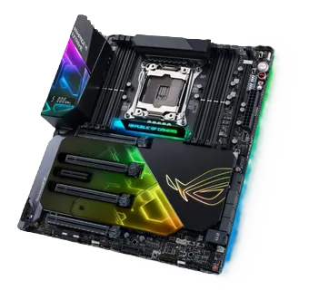
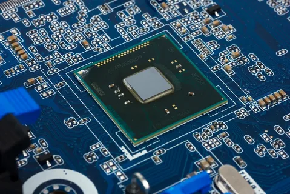
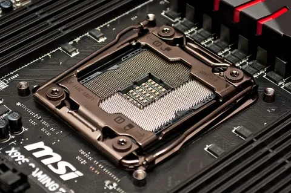
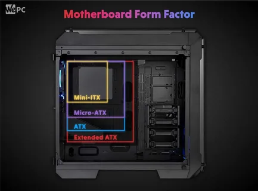

Материнская плата — Это элемент компьютера, который позволяет собрать в единую систему все устройства, чтобы они стабильно работали и выдавали нужные параметры производительности. От надёжности материнской платы зависит срок работы компьютера, а от её конфигурации — возможность улучшать его в будущем.Материнскую плату выбирают с учётом сокета процессора, чипсета, количества и вида слотов для остальных элементов системы.

Чипсет - Это набор микросхем, использованных на системной плате и необходимых для взаимодействия всех компонентов сборки. Модель чипсета определяет количество разъемов для подключения плат расширения, потенциал разгона ЦПУ.

Сокет — Это разъем на материнской плате, в который устанавливается процессор. Сокет является важнейшей характеристикой компьютера, определяя список совместимых чипсетов, процессоров, материнских плат и систем охлаждения, которые можно установить на него. Сокеты отличаются числом контактов, которое обычно растет вместе с мощностью и сложностью процессоров.

Форм-фактор — Это стандарт, определяющий размеры материнской платы для компьютера, места её крепления к шасси; расположение на ней интерфейсов шин, портов ввода-вывода, разъёма процессора, слотов для оперативной памяти, а также тип разъёма для подключения блока питания. Форм-фактор носит рекомендательный характер. Спецификация форм-фактора определяет обязательные и опциональные компоненты.